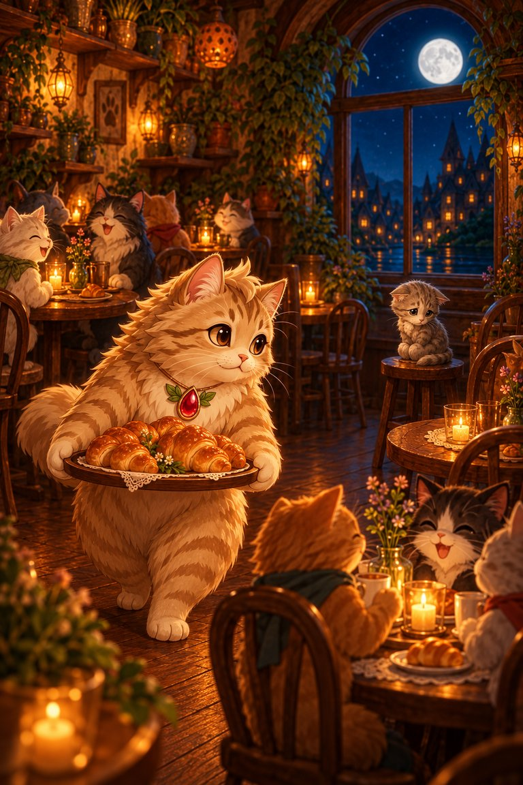
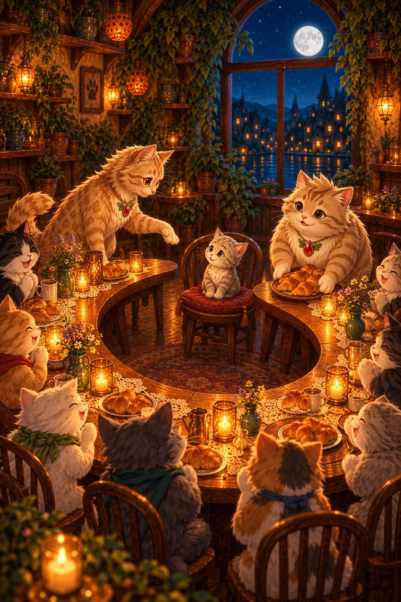
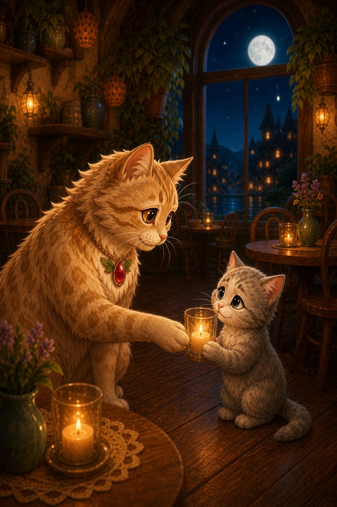

Page 1 of 4
Fe-Line-Mignon lights each candle for the moonlit café, then notices a new kitten sitting alone beside the window.
A four-page story about a full café and a new kitten who finds a place at the table.
5 printed pages · 0.8 MB · A4 or US Letter. Download PDF · Open PDF to printOpens in a new tab. Use the PDF viewer's Print control. To use less ink, read online and choose only the questions on page 5 in Print.
Fe-Line-Mignon lights each candle for the moonlit café, then notices a new kitten sitting alone beside the window.

Meow-inara carries a tray of warm croissants, but every table is full. The kitten whispers that she can simply go home.

The guests slide their little tables together into one long moon-shaped curve. A space appears exactly where the kitten can see everyone.

At goodnight, the kitten asks if she may return tomorrow. Fe-Line-Mignon gives her the candle by the window and says, “This light will save your place.”
They joined their tables and made her a place.
The candle by the window.
SnackPack Sentences & Spelling has many more short reads like this one, plus the Reading Trail, word packs and literacy games.
Another story about kindnessHen‑Berry’s Helping Day
Know a family or class who would enjoy it?